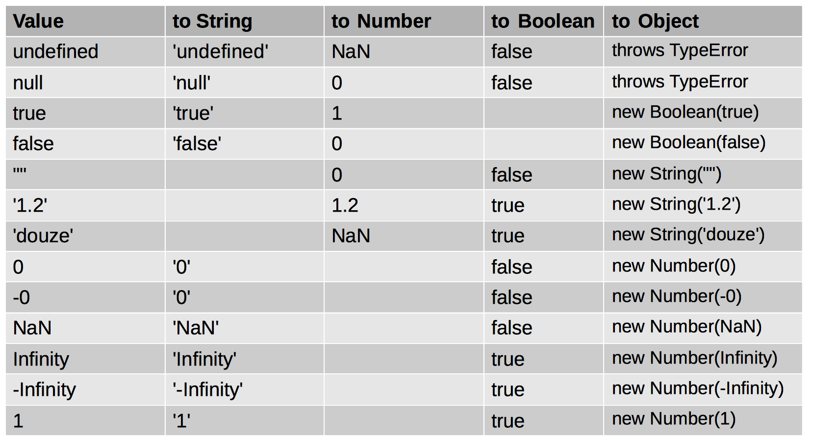
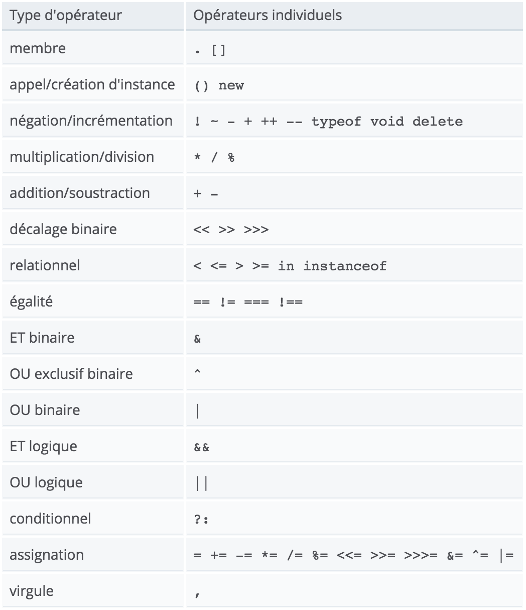

class: center, middle, inverse # Programmation Web 1: JavaScript [Johan Koitka](mailto:johan.koitka@univ-artois.fr) --- class: center, middle # 1. Le cœur du langage --- ## Éléments lexicaux et syntaxiques ### Sensibilité à la casse * Case-sensitive (≠ HTML mais = XHTML) * While ≠ while ### Encodage des caractères Unicode (UTF-16, tous les caractères sont sur 2 octets) ```javascript 'café' === 'caf\u00e9'; // true var chaîne = "ceci est une chaîne en utf-16"; var π = 3.14159265359; ``` ### Commentaires ```javascript // Ceci est un commentaire sur un ligne /* Ceci est un commentaire sur potentiellement plusieurs lignes */ ``` --- ### Mots-clés ##### ECMAScript 6 ``` break case class catch const continue debugger default delete do else export extends finally for function if import in instanceof let new return super switch this throw try typeof var void while with yield ``` ##### ECMAScript 3 (pour le futur...) ``` abstract boolean byte char double final float goto int long native short synchronized transient volatile ``` #### Autres mots-clés * `enum await` (all modes) * `implements package protected static interface private` (ES5 strict-mode) --- ## Les littéraux ### Quelques exemples ```javascript 12 12.2 0888 // en décimal ! 0666 // en octal ! (ES5 non strict) 0o666 // en octal (ES6) 0b10001 // binaire (ES6) 0xAB34 // hexadécimal "ceci est une chaîne" 'ceci aussi…' true false null undefined ``` --- ## Le cas des points-virgules ### WARNING ils sont facultatifs en JavaScript ### BONNES PRATIQUES on les utilisent toujours pour délimiter les instructions -- ### Exemples ```javascript a ++ b ``` -- ```javascript // a; ++b; ``` -- ```javascript return a + b ``` -- ```javascript // return; // a + b; ``` --- ## Types, valeurs et variables * *Types primitifs* * nombres * chaînes de caractères * booléens * null * undefined * symboles (ES6) * *objets* * tableaux * fonctions * dates * expressions régulières * ... --- ## Numbers ### Codage * Flottants IEEE 754 - 64 bits * Grandes valeurs : ±1.7976931348623157 × 10<sup>308</sup> * Petites valeurs : ±5 × 10<sup>−324</sup> * Permet de coder les entiers avec précision entre −9 007 199 254 740 992 (−2<sup>53</sup>) et 9 007 199 254 740 992 (2<sup>53</sup>) -- ### Quelques exemples ```javascript 0.2 + 0.1 === 0.3 // false ! ``` -- ```javascript 10000000000000000 + 1 === 10000000000000000 // true (1 suivi de 16 zéros) ! ``` -- ```javascript 1/0 // Infinity -1/0 // -Infinity 0/0 // NaN -0 // autre valeur de 0 ``` --- ### Syntaxe `[digits][.digits][(E|e)[(+|-)]digits]` ### Exemples ```javascript 3.14 .666666666 6.0e24 1.456e-32 ``` ### Différentes bases ```javascript 0xAB34FE // hexadécimal 0666 // octal si pas mode strict 0888 // décimal 0b10001101 // binaire (ES6) 0o666 // octal (ES6) ``` > WARNING : en ES5 mode strict, l'octal n'est pas accepté --- ### Opérateurs *\+* *\-* _*_ _/_ *%* _**_ (ES7) (attention, modulo sur les flottants) ```javascript 3.1 % 2; // 1.1 ``` ```javascript 3.2 % 2; // 1.2000000000000002 ``` ### L'objet prédéfini Math ```javascript Math.pow(2, 53) Math.round(.6) Math.ceil(.6) Math.floor(.6) Math.abs(-5) Math.max(x, y, z) Math.min(x, y, z) Math.random() // [0,1[ ``` --- ### L'objet prédéfini Math (suite) ```javascript Math.PI Math.E Math.sqrt(3) Math.pow(3, 1 / 3) Math.sin(0) Math.acos(1) Math.log(10) Math.log(100)/Math.LN10 Math.log(512)/Math.LN2 Math.exp(3) ``` --- ## Chaînes de caractères ### Littéraux - Délimités par " ou par ' - `""` ou `''`: ligne vide - `'cela coûte 12€'` ### Un caractère est une chaîne contenant un élément - `'a'` ou `"b"` ### Séquences d'échappement - `\0` (caractère NUL) - `\b` (backspace) `\t`(tabulation) `\n` (nouvelle ligne) `\v` (tabulation verticale) `\f` (page suivante) `\r` (retour charriot) - `\"` `\'` `\\` (resp. guillemets doubles, simples et anti-slash) - `\xXX` (latin-1) - `\uXXXX` (UTF-16 unicode) --- ### Unicode * Associe un nombre à un glyphe (plus petite entité de langage écrit ayant une signification) * Veut contenir l'ensemble des glyphes de toutes les langues (plus de 100 écritures à ce jour) * Contient ASCII et Latin-1 * Codages : UTF-8 ; UTF-16 ; UTF-32 -- #### En JavaScript... -- ```javascript var p = "π"; // 16-bit codepoint 0x03c0 var e = "𝑒"; // 17-bit codepoint 0x1d452 p.length // 1 e.length // 2: UTF-16 encoding "\ud835\udc52" ``` --- ### Concaténation ```javascript 'Totor' + ' ' + 'le' + ' castor'; // 'Totor le castor' '310' + '1'; // '3101' '310' + 1; // '3101' 1 + '310'; // '1310' 10 + 'a'; // '10a' '310' – 1; // 309 ``` ### Longueur (ce n'est pas une méthode !) ```javascript 'Totor le Castor'.length; // 15 ``` --- ### Autres opérations ```javascript var str = 'éléphant'; str.charAt(3); // 'p' str[3]; // 'p' str.charAt(str.length); // '' str.charCodeAt(0); // 233 str.slice(2, 4); // 'ép' str.slice('-3'); // 'ant' str.indexOf('é'); // 0 str.indexOf('Z'); // -1 str.lastIndexOf('é'); // 2 str.indexOf('é', 1); // 2 str.split('ph'); // [ 'élé', 'ant' ] str.replace('ph', 'f'); // 'éléfant' str.toUpperCase(); // 'ÉLÉPHANT' str.toUpperCase().toLowerCase(); // 'éléphant'; ``` --- ### Attention Les chaînes de caractères sont immuables ### Exemples ```javascript var str = 'éléphant'; str.replace('ph','f'); // 'éléfant' 'un ' + str + ' ça trompe énormément'; // 'un éléphant ça trompe énormément' str[0] = 'É'; str; // 'éléphant' str.toUpperCase().replace('PH','F'); // 'ÉLÉFANT' str; // 'éléphant' ``` --- ## Exercices ### Le code de César `'COUCOU' → 'FRXFRX'` * clé ? * généraliser pour différentes valeurs de clé cf. : `fromCharCode` et `charCodeAt` ### Généralisation (code par dictionnaire) clé : `'ERTFC…'` ### Codage par XOR `'COUCOU' ⊕ 'ABC '` → '\u0018\u000e\u0054\u0002\u0013\u004d\u000d\u000b\u0000\u0027\u0004\u0053\u0037\u0000\u001e\u0031\u001b\u0000\u000a\u0052\u0045\u0018\u0045\u0044\u0026\u0041\u0021\u009d\u0002\u001b\u006e\u004f\u03b4\u004f\u215d' --- ## Les booléens ### 2 valeurs possibles (attention à la casse !) * `true` et `false` ### Opérateurs * `||` (ou logique, coupe-circuit) * `&&` (et logique, coupe-circuit)) * `!` (non logique) ### Règles de conversion * sont convertis en false : `undefined` `null` `0` `-0` `NaN` `""` * toutes les autres valeurs sont converties en true --- ### Opérateurs de comparaison * `==` `!=` `>=` `<=` * `===` et `!==` -- ### Exemple ```javascript 101 == ('10' + '1'); // true 0 != ""; // false ``` -- ```javascript 101 === ('10' + '1'); // false 0 !== ""; // true ``` --- ## Les types `null` et `undefined` ### Le type `null` * contient une seule valeur : `null` * il représente l'absence de valeur ### Le type `undefined` * contient une seule valeur : `undefined` * il représente l'inexistence de variable -- ### Exemple ```javascript toto // undefined ``` -- ```javascript undefined == null // true ``` -- ```javascript undefined === null // false ``` --- ## Conversions implicites  _To be continued..._ --- ## Conversions explicites ### Les fonctions de conversion `parseInt` et `parseFloat` ```javascript parseInt("3 petits cochons"); // 3 parseFloat(" 3.14 etc."); // 3.14 parseInt("-12.34"); // -12 parseInt("0xFF"); // 255 parseInt("0xff"); // 255 parseInt("-0XFF"); // -255 parseFloat(".1"); // 0.1 parseInt("0.1"); // 0 parseInt(".1"); // NaN parseFloat("$72.47"); // NaN ``` ```javascript parseInt("11", 2); // 3 parseInt("ff", 16); // 255 ``` --- ### Utilisation des constructeurs `Number()`, `String()`, `Object()` ```javascript // sans new ! Number("3"); // 3 String(false); // "false" ("false.toString()") Boolean([]); // true Object(3); // new Number(3) ``` --- ### Quelques idiomes ```javascript x + ""; // ≡ String(x) +x; // ≡ Number(x) x - 0; // ≡ Number(x) !!x; // ≡ Boolean(x) ``` --- ### Utilisation de la méthode `toString()` marche pour la plupart des types, mais pas pour `null` et `undefined` -- ```javascript // toString() de Number var n = 17; var binaryString = n.toString(2); // "10001" var octalString = "0" + n.toString(8); // "021" var hexString = "0x" + n.toString(16); // "0x11" ``` -- ### Formatage de nombres en chaînes de caractères ```javascript var n = 3.1415; n.toFixed(0); // '3' n.toFixed(2); // '3.14' n.toFixed(5); // '3.14150' n.toExponential(1); // '3.1e+0' n.toExponential(3); // '3.142e+0' n.toPrecision(4); // '3.142' n.toPrecision(10); // '3.141500000' ``` --- ## Les opérateurs ### Opérateurs de comparaisons * `==` `!=` `===` `!==` `>` `>=` `<` `<=` ### Opérateurs arithmétiques * `+` `-` `*` `/` `%` * `**` (ES6) * `++` `--` (préfixé et infixé) `–` (unaire) `+` (unaire) Rappel : ```javascript 12.5 % 2; // 0.5 ! ``` ### Opérateurs logiques * `&&` (et) `||` (ou) `!` (non) --- ### Opérateur de concaténation de chaînes * `+` ### Opérateurs d'affectation * `=` * `+= //a += 1 // ≡ a = a + 1` * `-=` `*=` `/=` `%=` ### Autres opérateurs… * opérateurs de membre (`.` `[ ]`) * l'opérateur ternaire (`?:`) * opérateurs binaires et de décalage (`&` `|` `^` `~` `<<` `>>` `>>>`) * l'opérateur virgule (`,`) * `delete`, `typeof`, `void`, `in`, `instanceof`,... --- ### Priorité des opérateurs (du + au - prioritaire)  --- ## Les objets ### Un objet * Permet de définir des ensembles clés/valeurs (table de hachage) * Équivalent aux dictionnaires de Python, aux tableaux associatifs de PHP, aux HashMap de java, … * Base de tous les types avancés en JavaScript (Array, Date, Function, etc.) * Contiennent des propriétés/champs -- ### Littéraux d'objet ```javascript {}; // l'objet vide ``` ```javascript { nom: 'Totor', profession: 'castor', age: 14 }; ``` --- ### Accès aux champs ```javascript var point = { x: 12, y: 12 + 1 }; point.x; // 12 point['y']; // 13 ``` -- **Remarque :** dans le cas de la notation `[]`, on utilise forcément une chaîne de caractères (conversion implicite de `o[12]`) -- #### Autre exemple ```javascript var p = { piece: 'cavalier', couleur: 'blanc', case: 'B1' }; ``` -- ```javascript p.piece; // 'cavalier' p['couleur']; // 'blanc' p.case; // erreur ! p['case']; // 'B1' ``` --- ### Les méthodes Les objets peuvent contenir des fonctions (on parlera dans ce cas de méthodes) Par exemple: `get()` `set()` `toString()` `valueOf()`… -- #### Exemple ```javascript var o = { name: 'Totor le castor', age : 14, toString: function () { return this.name + ' a ' + this.age + ' ans'; } }; ``` -- #### Écriture compacte possible en ES6 ```javascript var o = { name: 'Totor le castor', age : 14, toString() { return this.name + ' a ' + this.age + ' ans'; } }; ``` --- ### Attention * Contrairement aux types de base, les objets sont mutables ! * On peut leur ajouter des propriétés dynamiquement * On peut supprimer leurs propriétés avec `delete` -- #### Exemples ```javascript var o = {x: 12}; o.x += 1; o.y = 13; o; // {x: 13, y: 13} o.x = 'une chaîne'; o; // {x: 'une chaîne', y: 13} delete(o.x); // true ! o; // {y: 13} ``` --- ### Conversions #### Méthodes * vers une chaîne de caractère : `toString()` * vers une _primitive_ : `valueOf()` #### Vers booléens * un objet est toujours vrai, y compris l'objet vide `{}` ! #### D'un type de base vers un objet * Les constructeurs de base sont appliqués: `String()`, `Number()` et `Boolean()` * `null` et `undefined` lancent une exception `TypeError` * Pas de problèmes pour `NaN` ou `Infinity` --- ### Comparaisons d'objet Les objets sont comparés par référence et pas par valeur ! #### Exemple ```javascript var o1 = {x: 1}; var o2 = {x: 1}; o1 == o2; // false o1 === o2; // false o1 == o1; // true {} == {}; // false ``` --- ## Les tableaux ### Remarques préliminaires * Les tableaux sont des objets particuliers (les champs sont les indices...) * Ils n'ont pas de taille fixe * Ils ne sont pas typés * Peuvent être à trou ### Les littéraux de tableaux ```javascript []; // le tableau vide [1, 2, 3, 4]; ['ABC', 12, true]; [1 + 2, {name: 'totor le castor'}]; ``` --- ### Accès en lecture/écriture ```javascript var tab = [1, 2, 3]; tab[0]; // 1, rq : 0 est converti en '0' tab[3] = 4; // création d'un nouvel élément tab[4] = tab[3] + 1; tab; // [1, 2, 3, 4, 5] ``` -- ### Taille d'un tableau la propriété length est mise à jour à chaque ajout de propriété qui est un numérique entre _0_ et _2<sup>32</sup>-1_ -- ```javascript tab.length; // 5 tab['toto'] = 12; tab[-1] = 12; tab.length; // 5 tab; // [ 1, 2, 3, 4, 5, toto: 12, '-1': 12 ] ``` --- ### Les tableaux creux ```javascript var tab = []; tab.length; // 0 tab[1000] = 1; // ajout d'un élément tab.length; // 1001 ! ``` -- #### Règle la propriété length défini l'indice immédiatement supérieur au plus grand indice existant du tableau ```javascript tab[tab.length] = 'fin du tableau'; // ajoute un élément à la fin du tableau tab.length; // 1002 ``` -- #### Autre Exemple ```javascript var tab = [1, 2, 3, 4]; tab['1'] = 12; tab[1.12] = 13; tab[-1] = 14; ``` -- ```javascript tab; // [ 1, 12, 3, 4, '1.12': 13, '-1': 14 ] tab.length; // 4 ``` --- ### Opérations sur les tableaux * `delete` : supprime un élément du tableau * `in` : recherche un indice dans le tableau #### Exemple ```javascript var tab = ['A', 'B', 'C', 'D', 'E']; 'B' in tab; // false 1 in tab; // true delete(tab[1]); // true tab.length; // 5 1 in tab; // false delete(tab[4]); // true tab.length; // 5 ! ``` --- ### Quelques méthodes * `join()` ```javascript var tab = [1, 2, 3, 4]; tab.join(); // '1,2,3,4' tab.join(' '); // '1 2 3 4' // rq : inverse de String.split() ``` -- * `reverse()` ```javascript tab.reverse(); // [4, 3, 2, 1] ATTENTION, le tableau est modifié tab; // [4, 3, 2, 1]; ``` -- * `sort()` ```javascript tab.sort(); tab; // [1, 2, 3, 4] ``` -- ```javascript // ATTENTION, ordre alphabétique: 11 < 2 tab.sort(function (a,b) {return a-b;}); // tri par ordre numérique... ``` --- ### D'autres méthodes * `Object.keys()` renvoie un tableau des clés (hors prototype) ```javascript var tab = [1, 2, 3, 4]; var keys = Object.keys(tab); var i, sum = 0, key; for (i = 0; i < keys.length; i += 1) { key = keys[i]; sum += tab[key]; } sum; // 10 ``` * `Array.prototype.includes()` teste si un élément appartient au tableau ```javascript var tab = [1, 2, 3, 4]; tab.includes(2); // true tab.includes(5); // false ``` --- * `concat()` crée un nouveau tableau et le renvoie ``` javascript var tab = [1, 2, 3, 4]; tab.concat([5, 6, 7]); // [1, 2, 3, 4, 5, 6, 7] ``` -- ```javascript [1, 2, 3, 4] + [5, 6, 7, 8]; // 1, 2, 3, 45, 6, 7, 8 ``` -- ### Et aussi... * `splice()` : renvoie un sous-tableau et modifie le tableau initial * `push()`/`pop()` : ajoute/supprime un élément en fin de tableau * `unshift()`/`shift()` : idem mais au début --- ## Les fonctions ### Remarques liminaires * Une fonction est un objet particulier * Type et nombre de paramètres indéterminés * Peut contenir d'autres fonctions -- ### Définition de fonction ```javascript function plus1 (n) { return n + 1; } ``` -- ```javascript // équivalent à... (ou presque) var plus1 = function plus1 (n) { return n + 1; }; ``` --- ### Type des arguments Le type des paramètres est déterminé à l'exécution. ```javascript var plus = function (a, b) { return a + b; }; ``` -- ```javascript plus(1, 2); // 3 ``` -- ```javascript plus('a', 'b'); // 'ab' ``` -- #### Exemple de typage "explicite" ```javascript var plusNumbers = function (a,b) { if (typeof a !== 'number' || typeof b !== 'number') { throw new TypeError(); } return a + b; }; ``` --- ### Nombre de paramètres quelconque Le tableau `arguments` contient l'ensemble des arguments de la fonction (ES5) -- ```javascript var addition = function () { var i, sum = 0; for (i = 0; i < arguments.length; i += 1) { sum += arguments[i]; } return sum; }; addition(1, 2, 3, 4, 5); // 15 ``` -- En ES6, on utilisera l'opérateur `...` -- ```javascript var addition = function (...args) { var i, sum = 0; for (let arg of args) { sum += arg; } return sum; }; addition(1, 2, 3, 4, 5); // 15 ``` --- ### Paramètres optionnels ```javascript var multiplier = function (a, b) { if (typeof a === 'undefined') a = 1; // a = a || 1 (?) if (typeof b === 'undefined') b = 2; // b = b || 2 (?) return a * b; }; multiplier(5); // 10 ``` -- #### Version ES6 ```javascript var multiplier = function (a = 1, b = 2) { return a * b; }; multiplier(5); // 10 multiplier(b: 5); // 5 ``` --- ### Fonctions internes (inner functions) ```javascript var hypothénuse = function (a, b) { var carré = function (n) {return n * n;}; return Math.sqrt(carré(a) + carré(b)); }; hypothénuse(3, 4); // 5 ``` -- ### Fonctions récursives ```javascript var sommeN = function somme (n) { if (n === 0) { return 0; } else { return n + somme(n – 1); } }; ``` --- ### Les méthodes #### Rappel Une méthode est une fonction stockée dans un objet. #### Exemple ```javascript var o = { n: 1, f: function () { console.log('J\'ai été appelée ' + this.n + ' fois.'); this.n += 1; } }; ``` -- ```javascript o.f(); // J'ai été appelée 1 fois. ``` -- ```javascript o['f'](); // J'ai été appelée 2 fois. ``` -- ```javascript var f2 = o.f; f2(); // ERREUR ! ``` --- ### Question Que renvoie cette fonction ? ```javascript function externe() { var x = 10; function interne(x) { return x; } return interne; } resultat = externe()(20); ``` -- ```javascript // renvoie bien 20 et non pas 10 ``` --- ## Les variables ### Déclaration ```javascript var i; var j, toto; var msg = 'totor le castor'; ``` -- ### Remarque 1 ```javascript var i = 10; i = 'dix'; // valide ``` -- ### Remarque 2 ```javascript var i; console.log(i); // undefined console.log(k); // lance une exception ``` --- ## Attention ! > si le mode strict n'est pas activé, on peut assigner une valeur à une variable non déclarée. Dans ce cas, on ajoute une propriété à l'objet global ! (≈ une variable globale) ### Exemple ```javascript xlurb = "n'importe quoi !"; // ajoute la propriété xlurb à l'objet global ! var test = function () { console.log(xlurb); xlurb2 = "toujours n'imp"; // ajoute la propriété xlurb2 à l'objet global ! }; test(); console.log(xlurb2); ``` -- ```javascript // n'importe quoi ! // toujours n'imp ``` --- ## Portée des variables ```javascript var portée = "globale"; var testPortée = function () { var portée = "locale"; return portée; }; testPortée(); // retourne locale ``` ### Attention La portée d'une variable ne dépend pas du bloc (≠ C) ```javascript { var i = 12; } console.log(i); // affiche 12 ! ``` --- ### Attention (2) -- #### Petite galerie des horreurs... ```javascript var f = function () { i = 12; j = 13; return i - 1; var i; }; ``` -- ```javascript f(); i; j; ``` -- ```javascript f(); // 11 i; // Exception: ReferenceError: i is not defined j; // 13 ``` -- > La variable est définie y compris dans la partie de code (accessible) avant le `var` ! --- ### Variables et ES6 #### `const` * permet de créer une constante ```javascript const e = 2.71828182846; ``` #### `let` * permet de créer une variable locale au bloc ```javascript { let i = 12; } console.log(i); // affiche une erreur ! ``` --- ## Les instructions (statement) ### Les expressions * sont des instructions quand utilisées seules (et donc ";") * Elles renvoient toujours une valeur (au pire `undefined`) -- ```javascript 2 // littéraux 0.2 true "something" 1 / 2 // évaluation de number i -= 2 'A ' + 'string' // évaluation de chaine [1,2,3] // initialisation de tableau {a: 1, b: 2} // initialisation d'objet a && b // expression logique function // déclaration de fonction class // déclaration de classe ``` --- ## Les instructions (statement) ### Les blocs * Ce sont des expressions * Ils sont délimités par `{` `}` * Ils ne finissent pas par `;` * JavaScript n'a pas de visibilité par bloc (pour `var`) ! --- ### Les conditionnelles : `if` ```javascript if (expression) // instructions if (expression) // instructions 1 else // instructions 2 ``` -- #### Rappel * Les valeurs "fausses" : `undefined` `null` `0` `-0` `NaN` `""` * Les valeur "vraies" : toutes les autres (y compris `{}`) -- #### Idiome *faux* ! ```javascript if (a) { console.log('la variable est définie'); } else { console.log('la variable n\'est pas définie'); } ``` ```javascript // et si a = 0 ? ``` --- #### Warning (ambiguïté du else) ```javascript if (a === b) if (b === c) console.log('a est égal à c !'); else console.log('a n\'est pas égal à b !'); // FAUX (ex a = 12, b = 12, c = 13) ! ``` -- ```javascript if (a === b) { if (b === c) console.log('a est égal à c!'); } else console.log('a n\'est pas égal à b!'); ``` --- ### La conditionnelle `switch` #### Syntaxe ```javascript switch(expression) { // instructions } ``` #### Fonctionnement ```javascript switch(n) { case 1: // commence si n === 1 // Exécute le bloc #1. break; case 2: // Execute le bloc #2 et #3 ! case 3: // Execute code block #3. break; default: // Execute le bloc #4 } ``` --- #### Autre exemple ```javascript function convert (x) { switch(typeof x) { case 'number': return x.toString(16); // on renvoie la valeur en hexa case 'string': return '"' + x + '"'; // on ajoute des guillemets default: return String(x); } } ``` --- #### Remarque Contrairement à C, les expressions à l'intérieur d'un `case` sont évalués à chaque passage (=> pas plus efficace que des `if`/`else`) #### Exemple ```javascript var tst = 'ok'; switch (s) { case tst.uppercase(): val = 'OK'; break; case tst.lowercase(): val = 'ok'; break; default: val = 'autre…'; } ``` --- ### Les boucles `do` et `while` ```javascript while (expression) instructions ``` ```javascript do instructions while (expression) ``` itère tant que expression est vraie --- ### Les boucles `for` et `for in` #### `for` ```javascript for (initialisation; test; increment) instructions ``` Fonctionne comme en C. Néanmoins on préfèrera l'utiliser pour des compteurs et pas à la place d'un `while` ! (et réciproquement...) -- #### `for in` Itère sur les éléments d'un objet *énumérable* ```javascript var obj = {x: 11, y: 12}; for (k in obj) { console.log(k, obj[k]); } ``` -- ```javascript // x 11 // y 12 ``` --- ### Autres instructions en vrac * #### `var` ```javascript var nom₁ [= valeur1][ ,…, nomn [ = valuen]]; ``` * #### `function` ```javascript var name = function ([arg1 [, arg2 […, argn]]]) { // instructions } ``` * #### `labels` et `goto` * #### `break` et `continue` * #### Les exceptions: `throw` et `try`/`catch`/`finally` * #### `with` * #### `debugger` * #### `'use strict'`